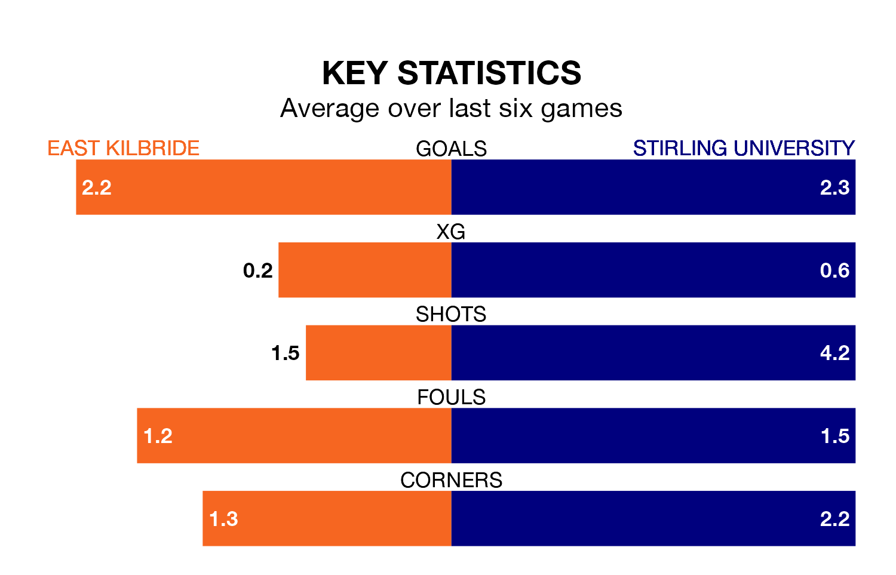

East Kilbride host Stirling University on Saturday at K Park Training Academy in Lowland Football League.
In their last league match, on January 13, East Kilbride beat Cumbernauld Colts 2-1 away.
Stirling University drew, 1-1 away at Gretna 2008 on January 6.
East Kilbride are top of the table after 22 games, of which they have won 17 and drawn three, earning 54 points.
Stirling University are eight places behind the Kilby in ninth, with nine wins and four draws putting them on 31 points.
With 63 goals in 22 games so far this season, the hosts are the league's second-highest scorers with 2.9 goals per game. And they are conceding fewer than average, letting in 25 goals at a rate of 1.1 per game.
The away side, meanwhile, are below average scorers, with 1.5 goals per game, compared to a league average of 1.7. They have conceded 1.3 goals per game.
In the last 10 years, East Kilbride and Stirling University have played each other on 17 occasions. East Kilbride won nine of them, Stirling University four, and they drew four times.
On average, the Kilby scored 2.1 goals and Stirling University 1.2 in those matches.
Their last meeting was on July 29, when they played out a 1-1 draw.
East Kilbride are in good form in Lowland Football League, with four wins and a draw from their last six games.
With three wins and two draws over that period, Stirling University's form is slightly worse – they have taken 11 points from 18, compared to East Kilbride's 13.
Updated: 09:07 (UTC), 24/01/24